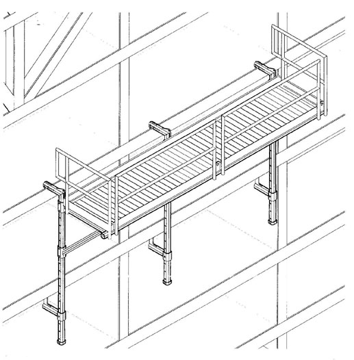

22.F Hanging Scaffolds
22.F.01–22.F.04
22.F.01 A hanging scaffold is a scaffold/work platform that is hung from a location (such as a lock gate) for work to be performed and that remains stationary until it is then repositioned with a crane/hoisting device. Hanging scaffolds shall be designed by a RPE competent in structural design. Scaffold performance and components shall meet or exceed those for general scaffolds and platforms found in ANSI A10.8-2001. > See Figure 22-1.
22.F.02 Hanging scaffolds shall meet the following requirements:
- The scaffold shall be securely fastened to a vertical structure (i.e. wall, lock gate, etc.) by hooks over a secured structural supporting member, bolt-on brackets, or other secure attachment. The maximum span between secure attachments is 8 ft (2.4 m). Fasteners shall be of adequate size to achieve design strength of scaffold.
- The scaffold must be secured against an uplift force equal to two times the weight of the scaffold and its rated load by means of hooks, brackets, or other secure attachments designed and placed to counteract uplift.
- The scaffold shall have a secondary attachment method to secure it against falling if the primary attachment fails. This should be a flexible attachment, such as wire rope or chain, designed to withstand a minimum of five (5) times the weight of the scaffold and its rated load. The secondary attachment shall be connected to an anchor point of the same load rating or greater.
- The scaffold shall have only one working level. Working platform decks shall be slip resistant and securely attached to the scaffold frame. The maximum width, front to back, of decks is 42 in (106.6 cm). Grating used for deck surfaces shall have a maximum width opening between bars small enough to prevent the rigging components used (slings, chains) from entering.
- Standard guardrails systems meeting the requirements of Section 21.F.01 shall be installed on all open sides and ends of the platform.
- The scaffold shall be conspicuously posted with a plate or other permanent marking that indicates:
- Weight of the scaffold;
- Number of personnel it was designed for;
- Rated weight capacity;
- Specific structure(s) it was designed to be attached to – this may be a code or other form of identification when designed for a number of different structures with similar structural attachment points;
- Name of the RPE who designed the scaffold; and
- Date of manufacture.
FIGURE 22-1
Hanging Scaffold

- Hanging scaffolds designed to also function as crane- or other load handling equipment- (LHE-) supported personnel work platforms shall meet the requirements of Section 16.T. This includes scaffolds that require a person to stand/ride on the platform while the initial attachment to the structure is made.
- The space between the platform deck edge and the face of the vertical structure shall not be more than 14 in (35.6 cm). Prior to use on each jobsite application, the CP shall determine if this space constitutes a hazard by being large enough to allow tools or objects to fall on workers below or, if LHE rigging may enter and entangle in the space. In these situations, the space shall be closed or blocked to remove the hazard.
22.F.03 Testing
- Prior to initial use and after any modification of the structural members or secure attachment points, the platform shall be proof tested to 125% of its rated capacity. The test shall take place on a structure the scaffold was designed for or a test structure with similar support member characteristics.
- Prior to use on each jobsite or placement location, hanging scaffolds shall be performance tested to 100% of the maximum intended load for the expected work. This test shall be performed with the scaffold attached to the structure in the work location.
22.F.04 Operations
- Scaffolds and their attachments shall be inspected by a CP prior to initial use on a worksite, before use on each work shift, and regularly during use until they are removed.
- Workers shall use properly selected and anchored personal fall protection when accessing and working on hanging scaffolds. Personal FP system components shall meet the requirements of Section 21.I.05. No part of a hanging scaffold shall be used as an anchor point for personal FP.
- The number of workers on the platform shall not exceed the number listed on the scaffold.
- Ladders may not be used on hanging scaffolds, except as a means of access from above the deck. Ladders used for access must meet the requirements of Section 24.B.
- Hanging scaffolds shall be coated or painted to minimize corrosion of the components. Storage between uses shall be designed to minimize damage to the scaffold.
{kind=link}